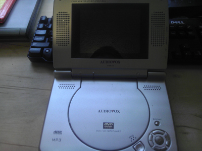
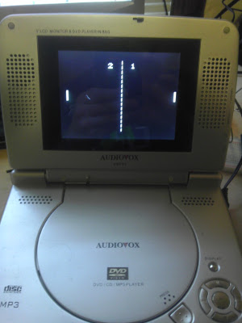

A while ago, I had a spare Arduino laying around, along with a portable DVD player, and so I decided to merge them together, and create a Pong machine using the two. Sadly, this project was several years ago, and both the DVD player and the video of the completed project have been lost through 3 moves. I do however have my build pictures, and the source, so I can at least share that. You can click on any of the images for a full sized version.
So, as we can see, it's a pretty standard DVD player. Widescreen 480p. What made this project easier was the fact that it had a composite input. Since an Arduino can output a composite signal pretty easily, that combined with Pong was a perfect little project to attempt.
Essentially I'd be making my own Nintendo DS, just bigger, heavier and with only one game. The control would be the stop/pause/ff/rw buttons, with the play button starting and restarting the game. The pause and stop buttons would move your paddle up and down. The ff/rw buttons would increase and decrease the difficulty of the AI that you would be playing against.
A quick initial setup to make sure that it all worked, before I started tearing it all up. Using a sacrificial cable, I could plug the Arduino into the DVD player and it would play Pong. I used this time to made the right side AI controlled. Before starting a round, you could increase the difficulty of the AI. Instead of trying to be fancy, I simply allowed the AI to move faster. It's remarkably simple getting a composite signal out.
And here it is opened up. One of the goals was to make it look 'whole' again, so the DVD reading mechanism would be removed, and the Arduino would be put back in its place.
And there is plenty of room without the dvd carriage in there.
The first major step was allowing the Arduino to output on the composite lines without actually plugging into the jack. So I soldered some wires on the pads. The pads were determined through trial and error.
However, it wasn't a very stable image. It would flicker from the DVD menu, to the composite output. For some reason tying these three pads together made it stable. This was discovered by accident while measuring continuities between pads and noticing how it flip flopped less when certain pads were being checked. It's ugly as hell, but that's what covers are for, no?
Since I wanted this to be completely self-contained, I needed a way to power the Arduino, without extra wires. Luckily for me, the input power for the DVD player was at a safe range for the Arduino, so I could simply tap straight into it.
And look how nice that solder job looks after the main board is put back! There are no problems if you can't see them /s. Again, it's kinda cool that two wires are needed for video output. There are more wires for the controls!
This was a pretty simple board to decipher. Thankfully I didn't need to do any more 'ground cheats' with this one.
Here I soldered some extensions to the wires. I kept track of which wire went where simply by the order, as it was a ribbon cable. I really wish that I had taken a picture of it all connected before I closed the case, but I forgot to take pictures as I neared the end of the project.
And here we see it running. This was a pretty neat weekend project, it certainly put a smile on my face.
I would like to thank:
Ardu-pong! for giving nice instructions on pong with the Arduino. This made
the whole enterprise so much easier.
and also:
Better Mother Fucking Website.
because I don't need 10MiB of js to make a site look okay.